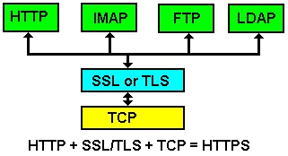
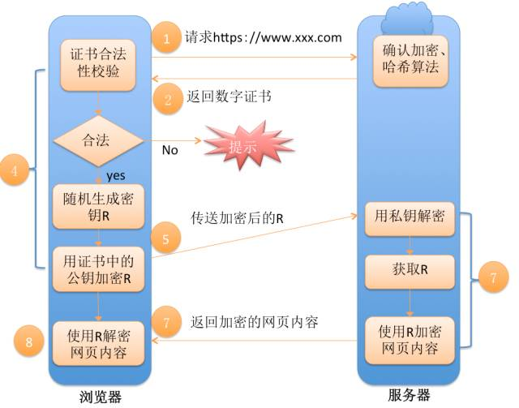

HTTPS全称为Hypertext Transfer Protocol over Secure Socket Layer，中文含义为“超文本传输安全协议”。
HTTP协议是没有加密无状态的明文传输协议，如果APP采用HTTP传输数据，则会泄露传输内容，可能被中间人劫持，修改传输的内容。HTTPS相当于HTTP的安全版本，作用如下：
认证用户和服务器，确保数据发送到正确的客户机和服务器；(验证证书)
加密数据以防止数据中途被窃取；（加密）
维护数据的完整性，确保数据在传输过程中不被改变。（摘要算法）
Https通讯原理
HTTPS是HTTP over SSL/TLS，HTTP是应用层协议，TCP是传输层协议，在应用层和传输层之间，增加了一个安全套接层SSL/TLS：

SSL/TLS层负责客户端和服务器之间的加解密算法协商、密钥交换、通信连接的建立，安全连接的建立过程如下所示：

简单描述如下：
- 浏览器将自己支持的一套加密算法、HASH算法发送给网站。
- 网站从中选出一组加密算法与HASH算法，并将自己的身份信息以证书的形式发回给浏览器。证书里面包含了网站地址，加密公钥，以及证书的颁发机构等信息。
- 浏览器获得网站证书之后，开始验证证书的合法性，如果证书信任，则生成一串随机数字作为通讯过程中对称加密的秘钥。然后取出证书中的公钥，将这串数字以及HASH的结果进行加密，然后发给网站。
- 网站接收浏览器发来的数据之后，通过私钥进行解密，然后HASH校验，如果一致，则使用浏览器发来的数字串使加密一段握手消息发给浏览器。
- 浏览器解密，并HASH校验，没有问题，则握手结束。接下来的传输过程将由之前浏览器生成的随机密码并利用对称加密算法进行加密。
数字证书、CA
信息安全的基础依赖密码学，密码学涉及算法和密钥，算法一般是公开的，而密钥需要得到妥善的保护，密钥如何产生、分配、使用和回收，这涉及公钥基础设施。
公钥基础设施（PKI）是一组由硬件、软件、参与者、管理政策与流程组成的基础架构，其目的在于创造、管理、分配、使用、存储以及撤销数字证书。公钥存储在数字证书中，标准的数字证书一般由可信数字证书认证机构(CA，根证书颁发机构)签发，此证书将用户的身份跟公钥链接在一起。CA必须保证其签发的每个证书的用户身份是唯一的。
链接关系（证书链）通过注册和发布过程创建，取决于担保级别，链接关系可能由CA的各种软件或在人为监督下完成。PKI的确定链接关系的这一角色称为注册管理中心（RA，也称中级证书颁发机构或者中间机构）。RA确保公钥和个人身份链接，可以防抵赖。如果没有RA，CA的Root 证书遭到破坏或者泄露，由此CA颁发的其他证书就全部失去了安全性，所以现在主流的商业数字证书机构CA一般都是提供三级证书，Root 证书签发中级RA证书，由RA证书签发用户使用的证书。
X509证书链，左边的是CA根证书，中间的是RA中间机构，右边的是用户：
.pfx格式和.cer格式的区别
购买的证书，格式为.pfx，带有公钥和私钥，附带一个密码。还有一种格式为.cer的证书，这种证书是没有私钥的。
带有私钥的证书
由Public Key Cryptography Standards #12，PKCS#12标准定义，包含了公钥和私钥的二进制格式的证书形式，以pfx作为证书文件后缀名(导出私钥,是需要输入密码的)。二进制编码的证书
证书中没有私钥，DER 编码二进制格式的证书文件，以cer作为证书文件后缀名。Base64编码的证书
证书中没有私钥，BASE64 编码格式的证书文件，也是以cer作为证书文件后缀名。
okhttp实现https请求
将ca证书放在本地，这里我们使用.pfx格式的证书
单向验证
有两种写法，先展示一种接近okhttp官方写法的方法:
private void setCertificates(Context context) {
try {
//将ca证书导入输入流
InputStream inputStream = context.getResources().openRawResource(R.raw.aaa);
//keystore添加证书内容和密码
KeyStore keyStore = KeyStore.getInstance(KeyStore.getDefaultType());
keyStore.load(inputStream, CLIENT_KET_PASSWORD.toCharArray());
//证书工厂类，生成证书
CertificateFactory certificateFactory = CertificateFactory.getInstance("X.509");
//生成证书，添加别名
keyStore.setCertificateEntry("test1", certificateFactory.generateCertificate(inputStream));
//信任管理器工厂
TrustManagerFactory trustManagerFactory = TrustManagerFactory.getInstance(TrustManagerFactory.getDefaultAlgorithm());
trustManagerFactory.init(keyStore);
//构建一个ssl上下文，加入ca证书格式，与后台保持一致
SSLContext sslContext = SSLContext.getInstance("TLS");
//参数，添加受信任证书和生成随机数
sslContext.init(null, trustManagerFactory.getTrustManagers(), new SecureRandom());
//获得scoket工厂
SSLSocketFactory sslSocketFactory = sslContext.getSocketFactory();
mOkHttpClient.sslSocketFactory(sslSocketFactory);
//设置ip授权认证：如果已经安装该证书，可以不设置，否则需要设置
mOkHttpClient.hostnameVerifier(new HostnameVerifier() {
@Override
public boolean verify(String hostname, SSLSession session) {
return true;
}
});
inputStream.close();
} catch (Exception e) {
e.printStackTrace();
}
}
第二种写法，同样有效:
private void setCertificates(Context context) {
try {
//将ca证书导入输入流
InputStream inputStream = context.getResources().openRawResource(R.raw.aaa);
//keystore添加证书内容和密码
KeyStore keyStore = KeyStore.getInstance(KeyStore.getDefaultType());
keyStore.load(inputStream, CLIENT_KET_PASSWORD.toCharArray())
//key管理器工厂
KeyManagerFactory keyManagerFactory = KeyManagerFactory.getInstance(KeyManagerFactory.getDefaultAlgorithm());
keyManagerFactory.init(keyStore, CLIENT_KET_PASSWORD.toCharArray());
//构建一个ssl上下文，加入ca证书格式，与后台保持一致
SSLContext sslContext = SSLContext.getInstance("TLS");
//参数，添加受信任证书和生成随机数
sslContext.init(keyManagerFactory.getKeyManagers(), null, new SecureRandom());
//获得scoket工厂
SSLSocketFactory sslSocketFactory = sslContext.getSocketFactory();
mOkHttpClient.sslSocketFactory(sslSocketFactory);
//设置ip授权认证：如果已经安装该证书，可以不设置，否则需要设置
mOkHttpClient.hostnameVerifier(new HostnameVerifier() {
@Override
public boolean verify(String hostname, SSLSession session) {
return true;
}
});
inputStream.close();
} catch (Exception e) {
e.printStackTrace();
}
}
值得注意的是，keystore的格式，keystore拓展名对应格式：
JKS:.jks/.ks
JCEKS:.jce
PKCS12:.p12/.pfx
BKS:.bks
UBER:.ubr
所以，如果ca证书用的是.pfx，那么可以这样写：
KeyStore keyStore = KeyStore.getInstance("PKCS12");
如果是.cer的话那么，就用:
KeyStore keyStore = KeyStore.getInstance(KeyStore.getDefaultType());
双向验证
双向验证的前提是，你的app同样生成一个jks的密钥文件，服务器那边会同时有个“cer文件”与之对应。
注意： Java平台默认识别jks格式的证书文件，但是android平台只识别bks格式的证书文件，所以这里还需要将jks的文件转成bks
通过jks文件生成对应的cer文件：
keytool -export -alias test1.jks -file test2.cer -keystore test1.jks -storepass 123456
如果服务端报错keystore文件格式不正确，则我们再将cer文件转换成jks文件：
keytool -import -alias test2.cer -file test2.cer -keystore test3.jks
客户端代码如下：
private void setCertificates(Context context) {
try {
//将ca证书导入输入流
InputStream inputStream = context.getResources().openRawResource(R.raw.aaa);
//keystore添加证书内容和密码
KeyStore keyStore = KeyStore.getInstance(KeyStore.getDefaultType());
keyStore.load(inputStream, CLIENT_KET_PASSWORD.toCharArray());
//证书工厂类，生成证书
CertificateFactory certificateFactory = CertificateFactory.getInstance("X.509");
//生成证书，添加别名
keyStore.setCertificateEntry("test1", certificateFactory.generateCertificate(inputStream));
//信任管理器工厂
TrustManagerFactory trustManagerFactory = TrustManagerFactory.getInstance(TrustManagerFactory.getDefaultAlgorithm());
trustManagerFactory.init(keyStore);
//双向验证，配置服务器验证客户端的证书
InputStream inputStream1 = context.getResources().openRawResource(R.raw.bbb);
KeyStore keyStore1 = KeyStore.getInstance(KeyStore.getDefaultType());
keyStore1.load(inputStream1, CLIENT_KET_PASSWORD_1.toCharArray());
KeyManagerFactory keyManagerFactory = KeyManagerFactory.getInstance(KeyManagerFactory.getDefaultAlgorithm());
keyManagerFactory.init(keyStore1, CLIENT_KET_PASSWORD_1.toCharArray());
//构建一个ssl上下文，加入ca证书格式，与后台保持一致
SSLContext sslContext = SSLContext.getInstance("TLS");
//参数，添加受信任证书和生成随机数
sslContext.init(keyManagerFactory.getKeyManagers(), trustManagerFactory.getTrustManagers(), new SecureRandom());
//获得scoket工厂
SSLSocketFactory sslSocketFactory = sslContext.getSocketFactory();
mOkHttpClient.sslSocketFactory(sslSocketFactory);
//设置ip授权认证：如果已经安装该证书，可以不设置，否则需要设置
mOkHttpClient.hostnameVerifier(new HostnameVerifier() {
@Override
public boolean verify(String hostname, SSLSession session) {
return true;
}
});
inputStream.close();
} catch (Exception e) {
e.printStackTrace();
}
}
参考资料
https://www.cnblogs.com/alisecurity/p/5939336.html
okhttp实现https请求
okhttp官方https的api方法
手机如何抓取HTTPS的请求数据